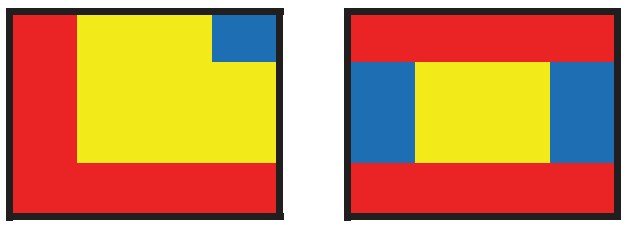
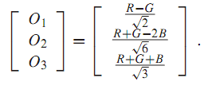
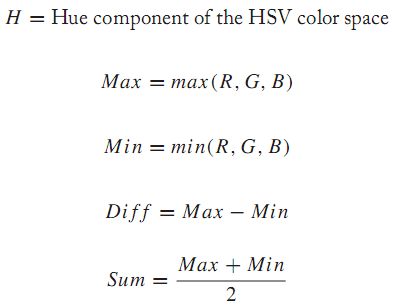

The main goal of content-based image retrieval is to find similar images.While similarity itself is a concept that is hard to formalize, the problem is compounded by the need for comparing millions of images to a query image at search time—a very challenging task. A common approach consists in representing images using the minimal amount of information needed to encode its essential properties.Thisminimal information—called image descriptor—is usually extracted fromthe image’s raw pixel values (and their coordinates)—a process known as feature extraction—and encoded in a numeric vector, the feature vector. Similarity, then, is defined by a suitable metric that computes a distance between two vectors.The design, extraction, and encoding of the image features as well as the choice of the metric makes up for a mathematical representation of visual similarity.
Example 3.1
Figure 3.5 shows two 4×4 pixels images, I1 and I2. The pixels in these images are either red, yellow, or blue.A simple image feature would consist of counting the colors in the images and assigning the pixel count to dimensions in a vector. Therefore, since there are 7 red pixels, 8 yellow pixels, and 1 blue pixel in the first image, I1 = (7, 8, 1). Respectively, the feature vector for the second image is I2 = (8, 4, 4). Knowing both feature vectors a distance function can be applied. A simple function would just sum the absolute differences between components in feature vectors,i.e., |7 − 8|+|8 − 4|+|1 − 4|= 8.Hence, 8 is the quantification of difference between the images I1 and I2. (Note that such a distance function is called a L1 distance and will be explained in detail in Section 3.4.)

Ideally, descriptors should be: (i) representative of the contents of the image (or region) from which they were extracted; (ii) robust to image rotation, scaling, or translation (often referred to as RST invariant in the computer vision literature); and (iii) compact, since the number of dimensions and the range of possible values along each dimension are critical to search time behavior.
The naïve color-based descriptor derived in Example 3.1 is somewhat representative of the global contents of the image.One of its obvious limitations is its inability to convey the layout of the colors in each image. It is a rather compact descriptor: the feature vector size is 3, regardless of the size of the image.But what about robustness? A closer inspection shows that, despite its simplicity, it is robust against rotation by angles multiple of 90◦. Scaling, however, leads to a different number of pixels in our example, and therefore to a different feature vector. Inmany cases, scaling operations also change the actual colors of pixels by approximating the color of merged or newly added pixels through their nearest neighbors. Our example feature is also robust against certain cases of translation, e.g., if pixels are switched in their positions, the actual feature vector is not changed.
COLOR FEATURES
“Color is one of the most obvious and pervasive qualities in our environment [26].” It is also a dominant feature in any content-based VIR system, due to the fact that the color information present in an image:
• can be computed in a relatively easy and straightforward way;
• is rather robust to background complications; and
• is mostly invariant to geometrical transformations, such as resize (scaling) or rotation.
Extracting color-based color features typically involves two main steps: (i) selection of a color model (or color space); and (ii) computation of a descriptor that encodes the color contents of an image—in a compact and discriminative way—according to the chosen color space.
Color Models
A color model (also called color space or color system) is a specification of a coordinate system and a subspace within that system where each color is represented by a single point.There have been many different color models proposed over the last 400 years [54]. Some of the most popular color models for VIR are: grayscale, RGB, HSV (and its variations), and HMMD.They are described below.
Grayscale
The grayscale color model is actually an image representation through which the color information is removed and the intensity of each pixel is computed by: Y = 0.3R +0.6G + 0.1B (where R,G, and B are the red, green, and blue values of each pixel).The weights in this equation were chosen tomodel the human eye’s differences in sensitivity to light stimuli in wavelengths that map to the red, green, and blue colors of the visible spectrum. Grayscale representations are used in VIR systems where the color information was not available in the first place (e.g., medical images, such as x-rays and CT scans). They can also be used by popular local visual descriptors, notably SIFT (Scale-Invariance Image Transform),where color doesn’t play any role.
RGB
The RGB color model is based on a Cartesian coordinate system,whose axes represent the three primary colors of light (R, G, and B), usually normalized to the range [0,1]. This information is usually available directly from the color raster for bitmap images, i.e., once an image file is read and decoded, no further conversions or calculations are needed to obtain its RGB representation. The number of discrete values of R, G, and B is a function of the pixel depth, defined as the number of bits used to represent each pixel: a typical value is 24 bits (3 color channels × 8 bits per channel). In VIR systems, the R, G, and B values are often (re-)quantized to a much smaller number of values, typically four quantization bins per primary color, resulting in a total of 43 = 64 color combinations. The RGB color model is sometimes expressed in a normalized way, where the normalized colors are denoted r, g, and b and computed as: r = R/R+G+B , g = G/R+G+B , b = B/R+G+B , and r + g + b = 1.Another variant of theRGB colormodel is the opponent color spaceO1,O2,O3, given by

In the opponent color space, the O3 channel represents the intensity information, whereas O1 and O2 encode the color information. The RGB color space and its variants are used in a large number of color descriptors, e.g., color histogram, opponent histogram, rg histogram, RGB-SIFT, OpponentSIFT, C-SIFT,and rgSIFT, among others.
HSV
The HSV model is part of a family of color models with the ability to dissociate the dimension of intensity (also called brightness or value)fromthe chromaticity—expressed as a combination of hue and saturation—of a color. Other, closely related, color models in this family are: HSI, HSB, and HSL.
2 The main advantages of the HSV color model (and its closely related alternatives) are its ability to match the human way of describing colors and to allow for independent control over hue, saturation, and intensity (value). Conversion from RGB (often referred to as sRGB in Java documents) to HSV (referred to as HSB) in Java is quite straightforward due to the availability of methods HSBtoRGB and RGBtoHSB for objects of class java.awt.Color. The HSV color space and its variants are used in several color descriptors, e.g., hue histogram and HSV-SIFT.
HMMD
The HMMD (Hue-Max-Min-Diff ) color space was developed in connection with
MPEG-7 visual descriptors standardization efforts. It is based on the RGB and HSV models and was conceived specifically for CBIR. The five components 3 of the HMMD color space are computed as follows:

Other color models:
There are many other color models in the image and video processing literature that were not included in this list.The interested readermay want to refer to Chapter 12 of for additional information, including examples in Java.
Color histograms
Color histograms are the most intuitive and the most common visual descriptor. A color histogram is composed of bins each representing the relative amount of pixels of a certain color. Each pixel of an image is assigned to one color bin and increases the respective count. Intuitively, a color image with 16 M different colors would result in a histogram with 16 M bins. To limit the number of dimensions, the color information is typically quantized, so similar colors in the original color space are considered as if they were identical and their frequency of occurrence is computed for the same bin. Color quantization is a critical step in the construction of a feature. The most straightforward color quantization approach consists in dividing the RGB color space into equal-sized partitions, like stacked boxes in 3D space, which has been shown to work rather well.
Listing 3.4 gives an example of color quantization in RGB color space.The quantized colors correspond to the definition of 64-color RGB.
Listing 3.4:Quantization in RGB color space to 64 bins
1 | int [] histogram = new int[64]; |